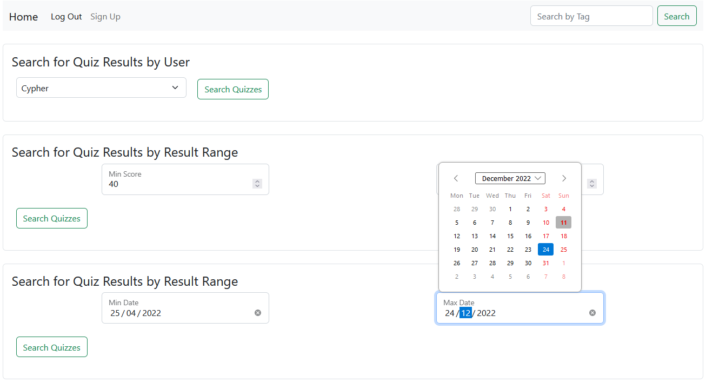

Quiz App
This project aimed to create a web solution for online quiz-taking.
Guests can look through all quizzes available or filter by tag but have to create an account to take them.
After creating an account, the Guest has a User permission level, which means being able to take a quiz and view all data from previous quizzes.
A teacher can create questions and assign tags to them. Given all questions in the question bank, a teacher can assemble a quiz with the tags of all questions.
A teacher can also view aggregate data from all students and quizzes.